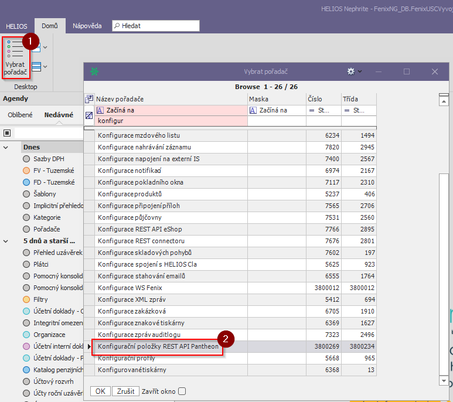
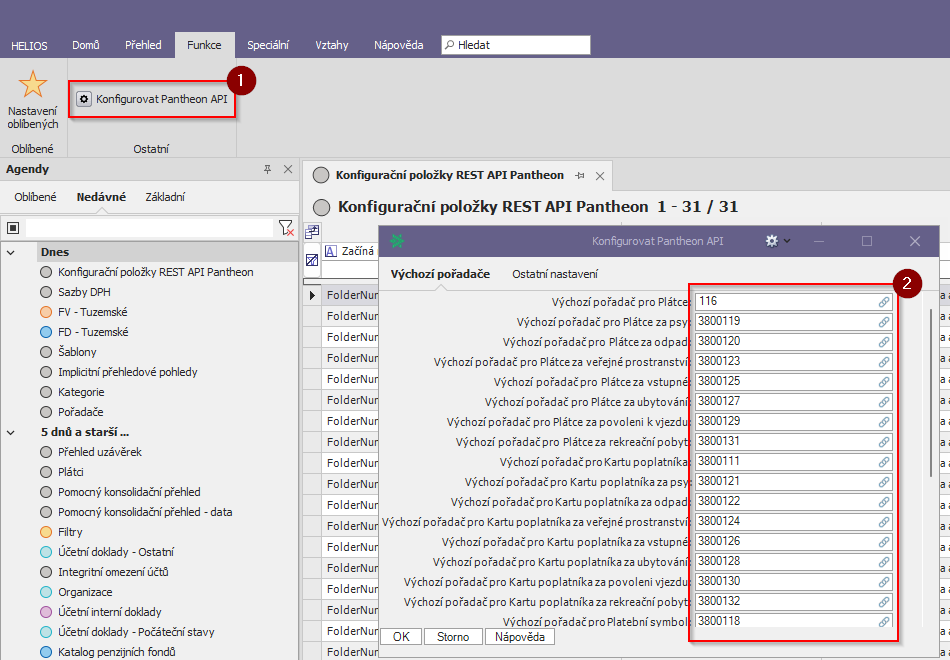
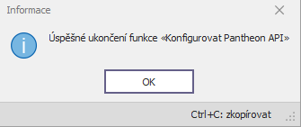

Úvod
REST API je rozšířený standard programového rozhraní pro integraci aplikací. Umožňuje srozumitelně a přehledně vystavit externím vývojářům funkcionalitu systému unifikovaným způsobem, který všichni znají. Má podporu ve vývojových nástrojích a jeho součástí je standardní strukturovaná dokumentace, která může být i interaktivní a umožňovat práci s konkrétními daty. Funkcionalitu vystavenou pomocí REST API pak dokáže externí vývojář využít pro snadnější vývoj integrací s externími systémy, bez větší potřeby komunikace s konzultantem nebo analytikem.
Historie změn
Instalace
Je potřeba mít již hotovu instalaci klienta.
Postup pro generování certifikátu
Konfigurace
Konfigurace umožňuje nastavit chování jednotlivých procesů API za běhu.
Lze nastavit výchozí pořadače při zakládání/aktualizace záznamů taktéž i lze při POST/PUT požadavku nastavit, že se zobrazí na výstup všechny validační chybové hlášky nebo pouze jen jedna.
Postup
1. Dohledat a otevřít pořadač 'Konfigurační položky REST API Pantheon'.

2. Nad pořadačem v přehledu spustit funkci 'Konfigurovat Pantheon API'.

3. Nakonfigurovat a uložit nastavení - tlačítko: OK.

Hotovo, nyní se změní chování API za běhu.
Doporučené filtrování při GET požadavku
Vždy platí zafiltrovat co nejvíce pro nejrychlejší zpracování a výstup.
Query parametry
| Požadavek | Doporučené filtrování v query | Důvod |
|---|---|---|
| GET Customer/Pantheon/Platce | ?jmeno=[V]&prijmeni=[V]&datumNarozeni=[V:MM-DD-YYYY]&ico=[V]&kodKnihy=[V]&variabilniSymbol=[V] | Nejrychlejší zpracování a výstup |
| GET Customer/Pantheon/Predpis | ?platceId=[V]&kodKnihy=[V]&variabilniSymbol=[V] | Nejrychlejší zpracování a výstup |
| GET Customer/Pantheon/Uhrada/Predpis | ?platceId=[V]&kodKnihy=[V]&predpisId=[V] | Nejrychlejší zpracování a výstup |
Chování - Use Case: Založení dobropisu
Procesy - Obecně (Client)
Předpoklad:
• Oprávnění na tuto akci
• Mám vybrán předpis platby (faktura vydaná)
• bude napárován právě 1 předpis FV
Systém založí dobropis navázaný na vybranou FV.
Procesy - Technicky (API)
| Proces | Popis |
|---|---|
| Validace vstupního modelu | API zvaliduje vstupní model požadavku a v případě chyb se rovnou odkáže na proces Výstup. |
| Založení instance dobropisu | Založení instance dobropisu na základě vstupního modelu POST požadavku - zpracování dat a založení samotného dobropisu s externím id. Když neexistuje organizace definovaná na modelu, api se jí pokusí automaticky založit. |
| Vypořádání podkladové faktury dobropisem | Když je v modelu nainicializovaná proměnná podkladovaFakturaId, tak se api pokusí vypořádat tuto fakturu dobropisem, když ovšem nastane vyjímka/interní chyba tak se založený dobropis smaže a s ním i externí id. |
| Výstup | API vrátí založený záznam dobropisu, popř. chybové hlášky. |
Chování - Use Case: Založení faktury vydané
Procesy - Obecně (Client)
Předpoklad:
• Oprávnění na tuto akci
Při vytvoření FV se provede načtení atributů z údajů pořízených u Plátce:
• Odběratel (Plátce)
• Variabilní symbol
• Párovací symbol
• Specifický symbol
• Účet
• Kontace
• Rozpočtová skladba
• Uživatel zadá částku, na kterou má být FV
Systém založí FV.
Procesy - Technicky (API)
| Proces | Popis |
|---|---|
| Validace vstupního modelu | API zvaliduje vstupní model požadavku a v případě chyb se rovnou odkáže na proces Výstup. |
| Založení instance faktury vydané | Založení instance faktury vydané na základě vstupního modelu POST požadavku - zpracování dat a založení faktury vydané s externím id. Když neexistuje organizace definovaná na modelu, api se jí pokusí automaticky založit. |
| Výstup | API vrátí založený záznam FV, popř. chybové hlášky. |
Chování - Use Case: Založení plátce
Příklad úspěšného založení
{
"errors": null,
"celkemZaPredpisy": 0.0,
"kodKnihy": 444,
"platceId": 119097,
"platceIdEx": "PIX_000202",
"platnostDo": null,
"platnostOd": "2022-01-01T00:00:00",
"poznamka": "",
"specifickySymbol": null,
"spojovaciCislo": 0.0,
"variabilniSymbol": "4440000202",
"zbyvaZaPredpisy": 0.0,
"organizace": {
"cisloOrganizace": 119096,
"nazevZkraceny": "Novák",
"nazevDoplnujici": "",
"jmeno": "Karel",
"prijmeni": "Novák",
"ico": "",
"nazevOrganizace": "Novák Karel",
"dic": "CZ11111111111",
"pravniForma": "SO",
"eMail": "org@org.net",
"poznamka": "",
"datumNarozeni": "1988-10-10T00:00:00",
"datumUmrti": null,
"rodneCislo": "",
"organizaceIdEx": "OIX_00202",
"platceDph": "N",
"idPartnera": "EXP_00202",
"stav": "6",
"zemeId": "CZ",
"adresy": []
}
}
Procesy - Obecně (Client)
Předpoklad:
• Oprávnění na tuto akci
Uživatel zadá kód poplatku
Reference na subjekt do organizací
Systém vygeneruje párovací symbol a uloží plátce.
Procesy - Technicky (API)
| Proces | Popis |
|---|---|
| Validace vstupního modelu | API zvaliduje vstupní model požadavku a v případě chyb se rovnou odkáže na proces Výstup. |
| Založení instance plátce | Založení instance plátce na základě vstupního modelu POST požadavku - zpracování dat a založení plátce s externím id. Když neexistuje organizace definovaná na modelu, api se jí pokusí automaticky založit. |
| Založení instance poplatníka | Následuje založení karty poplatníka. |
| Založení instance platebního symbolu | Následuje založení instance platebního symbolu pro variabilní a specifický symbol. |
| Založení instance aktivního plátce | Následuje založení aktivního plátce. |
| Založení instance aktivního poplatníka | Následuje založení aktivního poplatníka. |
| Výstup | API vrátí založený záznam plátce, popř. chybové hlášky. |
Chování - Use Case: Aktualizace plátce
Procesy - Obecně (Client)
Předpoklad:
• Oprávnění na tuto akci
Lze editovat:
Bez omezení:
• Trvalý pobyt; Doručovací adresa
• Kontaktní adresa k případu
• Zástupce (např. zákonný)
• Poznámka
S omezením:
• Období splatnosti (měsíční, pololetní, roční,..)(pokud nejsou vygenerované předpisy v aktuálním období, na další období bez omezení)
• Sazba (pokud nejsou vygenerované předpisy v aktuálním období, na další období bez omezení)
• Způsob úhrady (pokladnou, bankou, SIPO,...)
• Platnost plátce (pokud nejsou vygenerované předpisy)
Nelze editovat:
• Kniha poplatku
Systém aktualizuje daného plátce.
Procesy - Technicky (API)
| Proces | Popis |
|---|---|
| Validace vstupního modelu | API zvaliduje vstupní model požadavku a v případě chyb se rovnou odkáže na proces Výstup. |
| Aktualizace plátce | Proběhne aktualizace záznamu plátce na základě vstupního PUT modelu. Aktualizuje se pouze název plátce, organizace, spojovaci_cislo a poznámka. |
| Výstup | API vrátí aktualizovaný záznam plátce, popř. chybové hlášky. |
Chování - Use Case: Zneplatnění plátce
Procesy - Obecně (Client)
Předpoklad:
• Oprávnění na tuto akci
Funkce: Ukončit platnost plátce (POH)
Parametry funkce:
• Datum ukončení
• Plátce
• Komentář
Pro případy, že se subjekt odstěhoval apod.:
Předpoklad:
• Oprávnění na tuto akci
• Existuje vazba mezi Plátcem a Poplatníkem (1:1) -> Plátce je sám sobě poplatníkem
• Existuje platný plátce pro poplatníka:
Existuje záznam ve třídě PohPlatceAktivni , kde je atribut právě u jednoho záznamu PlatnostDo = null
Pokud není předpoklad splněn KONEC AKCE....
jinak
Aktualizace záznamu ve třídě
PohPlatceAktivni.PlatnostDo = požadovaný datum ukončení.
PohPlatceAktivni.Komentář = požadovaný komentář
Validační podmínka pro uložení:
Požadovaný datum ukončení musí být mladší nežli PohPoplatnikAktivni.PlatnostOd na právě aktualizovaném záznamu
Systém zneplatní daného plátce.
Procesy - Technicky (API)
| Proces | Popis |
|---|---|
| Zneplatnění plátce | API provolá cowley funkci, která ukončí platnost plátce na základě datumu ukončení a komentáře. |
| Výstup | API vrátí aktualizovaný záznam plátce, popř. chybové hlášky. |
Chování - Use Case: Založení předpisu
Procesy - Obecně (Client)
Předpoklad:
• Oprávnění na tuto akci
Parametry
• PreKnihaPredpisu.aktivní rok (u knihy)
• Datum vystavení
• Aktuální období - parametr se použije za předpokladu, že je na knize nastaveno generování do období
• Poradače FV (u knihy)
• Kniha
• rezim_vyporadani_fv A-N -> funkce v režimu vypořádání předpisů
Program doplní podle nastavení na knize datum splatnosti a založí předpis.
Po založení předpisu se provede ještě automaticky záznam do tabulky PohPoplatníkPředpis.
Procesy - Technicky (API)
| Proces | Popis |
|---|---|
| Validace vstupního modelu | API zvaliduje vstupní model požadavku a v případě chyb se rovnou odkáže na proces Výstup. |
| Založení faktury vydané | Založení faktury vydané podle modelu POST požadavku a uložení externího id. |
| Založení předpisu poplatníka | Založení předpisu poplatníka podle modelu POST požadavku a uložení externího id. |
| Výstup | API vrátí vytvořený záznam předpisu, popř. chybové hlášky. |
Chování - Use Case: Aktualizace předpisu
Procesy - Obecně (Client)
Předpoklad:
• Oprávnění na tuto akci
• Předpis je ve stavu, který umožnuje změnu atributů
Systém aktualizuje daný předpis.
Procesy - Technicky (API)
| Proces | Popis |
|---|---|
| Validace vstupního modelu | API zvaliduje vstupní model požadavku a v případě chyb se rovnou odkáže na proces Výstup. |
| Aktualizace předpisu poplatníka | Aktualizuje datum splatnosti na záznamu (datum_splatnosti). |
| Výstup | API vrátí aktualizovaný záznam předpisu, popř. chybové hlášky. |
Chování - Use Case: Stornování předpisu
Procesy - Obecně (Client)
Předpoklad:
• Oprávnění na tuto akci
• Předpis je ve stavu, který umožnuje stornování
Po stornování předpisu se provede ještě automaticky stornování záznamu v tabulce PohPoplatníkPředpis.
Procesy - Technicky (API)
| Proces | Popis |
|---|---|
| Stornování předpisu poplatníka | Zavolá cowley funkci StornovatPredpis, která provede stornování předpisu. |
| Výstup | API vrátí aktualizovaný záznam předpisu se stavem Stornováno, popř. chybové hlášky. |
Chování - Use Case: Založení přeplatku
Procesy - Obecně (Client)
Předpoklad:
• Oprávnění na tuto akci
• Mám vybrán předpis platby (faktura vydaná)
• Bude napárován právě 1 předpis FV
• Jestliže je částka větší než 0 vystavuji Vrubopis (pořadač FV na knize předpisu) v opačné případě vystavuji Přeplatek (pořadač přeplatku na knize předpisu)
Systém založí přeplatek navázaný na vybraný předpis.
Po založení přeplatku se provede ještě automaticky záznam do tabulky PohPoplatníkPředpis.
Procesy - Technicky (API)
| Proces | Popis |
|---|---|
| Validace vstupního modelu | API zvaliduje vstupní model požadavku a v případě chyb se rovnou odkáže na proces Výstup. |
| Založení dobropisu | Založení dobropisu podle modelu POST požadavku a uložení externího id. |
| Založení přeplatku | Založení přeplatku podle modelu POST požadavku a uložení externího id. |
| Výstup | API vrátí vytvořený záznam přeplatku, popř. chybové hlášky. |
Chování - Use Case: Aktualizace přeplatku
Procesy - Obecně (Client)
Předpoklad:
• Oprávnění na tuto akci
• Přeplatek je ve stavu, který umožnuje změnu atributů
Systém aktualizuje daný přeplatek.
Procesy - Technicky (API)
| Proces | Popis |
|---|---|
| Validace vstupního modelu | API zvaliduje vstupní model požadavku a v případě chyb se rovnou odkáže na proces Výstup. |
| Aktualizace přeplatku | Aktualizuje datum splatnosti na záznamu (datum_splatnosti). |
| Výstup | API vrátí aktualizovaný záznam přeplatku, popř. chybové hlášky. |
Chování - Use Case: Stornování přeplatku
Procesy - Obecně (Client)
Předpoklad:
• Oprávnění na tuto akci
• Přeplatek je ve stavu, který umožnuje stornování
Po stornování přeplatku se provede ještě automaticky stornování záznamu v tabulce PohPoplatníkPředpis.
Procesy - Technicky (API)
| Proces | Popis |
|---|---|
| Stornování přeplatku | Zavolá cowley funkci StornovatPredpis, která provede stornování přeplatku. |
| Výstup | API vrátí aktualizovaný záznam přeplatku se stavem Stornováno, popř. chybové hlášky. |